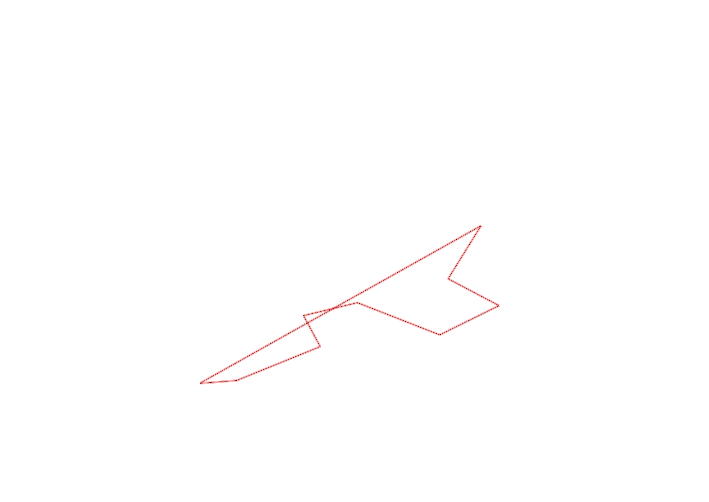
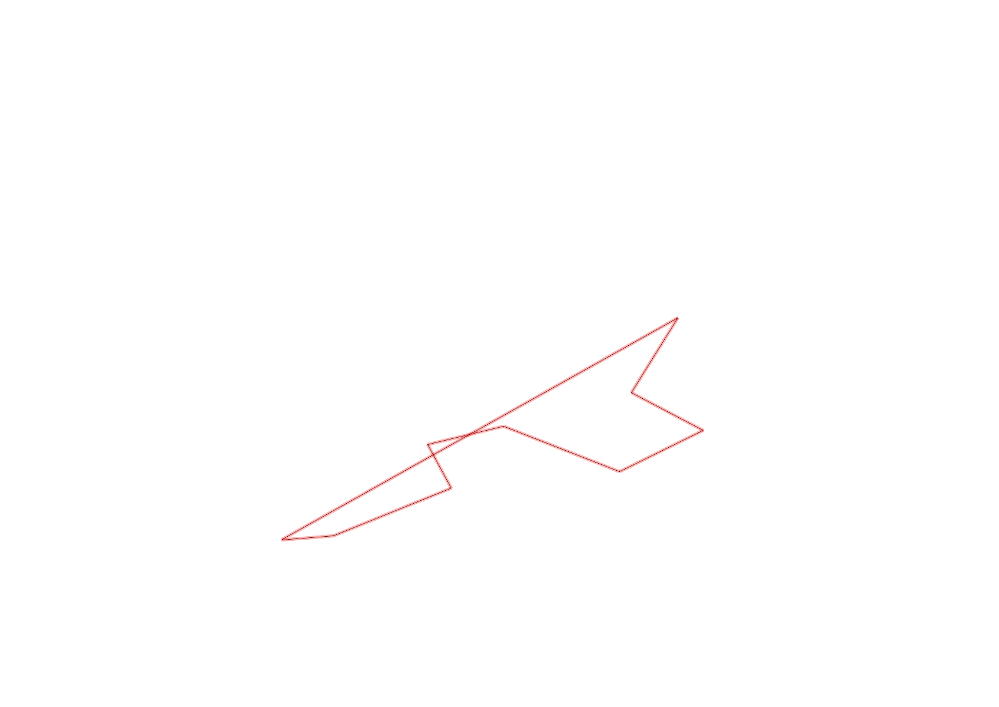

| Control |
Points |
Time Punched |
Distance |
Your Time |
Pace |
Place |
Fastest Time |
Median Time |
% Behind Fastest |
| 52 |
50 |
|
0.24 |
0:01:47 |
07:25 |
6 / 6 |
0:01:21 |
0:01:29 |
32% |
| 60 |
60 |
|
0.58 |
0:08:17 |
14:16 |
1 / 1 |
0:08:17 |
0:08:17 |
0% |
| 83 |
80 |
|
0.23 |
0:03:17 |
14:16 |
5 / 6 |
0:02:22 |
0:02:53 |
38% |
| 81 |
80 |
|
0.36 |
0:02:18 |
06:23 |
4 / 6 |
0:01:53 |
0:02:16 |
22% |
| 57 |
50 |
|
0.57 |
0:03:24 |
05:57 |
3 / 6 |
0:03:04 |
0:03:27 |
10% |
| 75 |
70 |
|
0.43 |
0:04:31 |
10:30 |
1 / 1 |
0:04:31 |
0:04:31 |
0% |
| 64 |
60 |
|
0.37 |
0:03:27 |
09:19 |
2 / 2 |
0:02:48 |
0:03:07 |
23% |
| 101 |
100 |
|
0.4 |
0:09:24 |
23:30 |
3 / 3 |
0:03:40 |
0:06:25 |
156% |
| Finish |
0 |
|
2.08 |
0:23:52 |
11:28 |
1 / 1 |
0:23:52 |
0:23:52 |
0% |
Total Distance Covered: 5.26km
Points Scored: 550
Late Penalty: -20
Final Score: 530
Total Time: 1hours 0minutes 17seconds
Efficiency: 100.76 points/km
 
